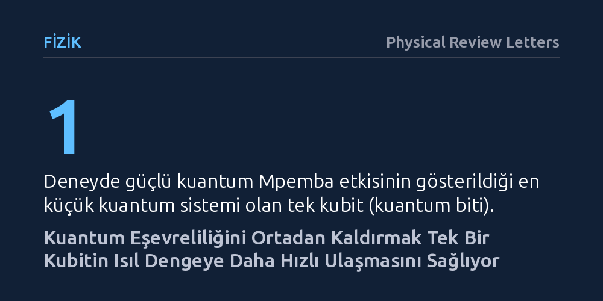

FIZIK · Physical Review Letters · 2026-10-23
Araştırmacılar, başlangıçta dengeden daha uzak bir kuantum sisteminin kuantum eşevreliliği silinerek dengeye daha hızlı ulaşıp ulaşamayacağını araştırdı. Tek kubit içeren optik simülasyonla, eşevreliliğin stratejik olarak yok edilmesinin güçlü kuantum Mpemba etkisini ortaya çıkardığı deneysel olarak gösterildi.
Sıcak suyun soğuk sudan hızlı donması gibi sezgilere aykırı bir hızlanmanın kuantum ölçeğinde de geçerli olduğunu ve kuantum eşevreliliği kontrol edilerek yönetilebileceğini gösteriyor.

Gündelik yaşamda sıcak suyun belirli koşullar altında soğuk sudan daha çabuk donabildiği gözlemlenir; bu şaşırtıcı duruma termodinamikte Mpemba etkisi adı verilir. Sezgilere tümüyle aykırı olan bu fenomen, ısıl dengeden başlangıçta daha uzakta bulunan bir sistemin, dengeye daha yakın duran bir sisteme kıyasla nasıl olup da daha çabuk yatışabildiği sorusunu akla getirir. Klasik fizik çerçevesinde uzun yıllardır tartışılan bu dinamiğin, mikroskobik ölçekte ve kuantum yasalarının hüküm sürdüğü bir evrende nasıl işlediği ise açık kuantum sistemleri açısından temel bir merak konusudur.
Kuantum bilişim ve yeni nesil nano-cihazların geliştirilmesinde, sistemlerin çevreyle etkileşime girerek denge durumuna gevşemesi (relaksasyon) hayati bir rol oynar. Eğer dengeden uzak bir kuantum durumu hedefine daha hızlı varabiliyorsa, bu durum kuantum işlemcilerin soğutulmasından bilgi saklama kararlılığına kadar pek çok alanda kontrol edilebilir bir avantaja dönüştürülebilir. Bu çalışmada araştırmacılar, kuantum ölçeğinde bu anomalinin ortaya çıkıp çıkamayacağını ve kuantum eşevreliliğinin bu gevşeme sürecinde nasıl bir pay sahibi olduğunu sorgulamıştır.
Araştırma ekibi, teoride öngörülen gevşeme davranışını laboratuvar ortamında sınamak için en küçük kuantum sistemi olan tek bir kubit (kuantum biti) modelini seçti. Açık bir kuantum sisteminin ısıl bir banyo ile etkileşimini matematiksel olarak betimleyen en temel yaklaşımlardan biri olan Davies haritası teorik temel olarak kabul edildi.
Fiziksel doğrulama için tamamen kontrol edilebilir fotonik bir optik deney düzeneği geliştirildi. Tekil fotonların polarizasyon durumlarını hassas biçimde işleyen bu düzenek, Davies haritasının öngördüğü dinamiği başarıyla simüle etti. Düzeneğin geçerliliği ve güvenilirliği, kuantum dinamiğinin zaman içindeki tutarlılığını temsil eden yarı-grup (semigroup) özelliğinin deneysel olarak doğrulanmasıyla garanti altına alındı.
Sistemin dengeye sıradan bir gevşemeden çok daha hızlı ulaştığı 'güçlü Mpemba etkisi', klasik modellerde genellikle en yavaş sönümlenen tekil bir gevşeme modunun varlığına ihtiyaç duyar. Ancak araştırmacılar Davies haritası dinamiğinde bu koşulun esnediğini; birbirine dejenere olan en yavaş sönüm modlarının tamamen kuantum eşevreliliğinden (koherans) kaynaklandığını ortaya koydu.
Bu teorik tespitten yola çıkan ekip, tek kubitin başlangıç durumundaki kuantum eşevreliliğini stratejik biçimde sıfırladı. Eşevrelilik ortadan kaldırıldığında, sistemi yavaşlatan modlar tamamen devre dışı kaldı ve kubit beklenenden çok daha seri bir şekilde ısıl dengeye ulaştı. Böylece tek bir kubit düzeyinde hakiki ve güçlü bir kuantum Mpemba etkisinin varlığı ilk kez deneysel olarak gösterilmiş oldu.
Elde edilen sonuçlar, kuantum eşevreliliğinin sadece kuantum üst üste binme veya kuantum üstünlüğü gibi hesaplama süreçlerinde değil, termodinamik gevşeme hızlarında da belirleyici bir mekanizma olduğunu ortaya koyuyor. Bir kuantum sisteminin geçmişindeki eşevrelilik izlerini bilinçli olarak temizlemek, sistemin dengeye ulaşma süresini belirgin şekilde kısaltabiliyor.
Yazarların kurduğu optik simülasyon platformu, gelecekte açık kuantum sistemlerinin karmaşık termodinamiğini araştırmak için son derece esnek ve ayarlanabilir bir zemin sunuyor. Her ne kadar çalışma şu an tek bir kubit üzerinde gösterilmiş olsa da, kuantum donanımlarının termal yönetiminde ve kuantum motorlarının tasarımında bu tür gevşeme stratejilerinden yararlanma potansiyeli doğuruyor.